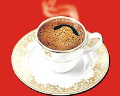

|
 Arçelik,
2004 yýlýnda pazara sunduðu Türk kahvesi makinesi Telve ile
uluslararasý alanda bir baþarýya daha imza attý. Telve, dünyaca
ünlü markalarla yarýþarak ve tasarým alanýnýn en prestijli
ödüllerinden biri olan iF Design Award'un 2005 yýlý ürün tasarým
kategorisinde endüstriyel tasarým ödülünün sahibi oldu. Arçelik'e
ödülü, dünyanýn en büyük biliþim fuarý olan ve Almanya'nýn
Hannover þehrinde bulunan CeBIT Fuarý'nýn açýlýþý nedeniyle
düzenlenen ödül töreninde verildi. 1954 yýlýndan bu yana dünyanýn
önde gelen markalarýnýn tasarýmlarýnýn çekiþmesine sahne olan
iF'te bugüne kadar ödül alanlar arasýnda, Samsung, Adidas,
Canon, BMW, Volkswagen gibi dünyaca ünlü markalar bulunuyor. Arçelik,
2004 yýlýnda pazara sunduðu Türk kahvesi makinesi Telve ile
uluslararasý alanda bir baþarýya daha imza attý. Telve, dünyaca
ünlü markalarla yarýþarak ve tasarým alanýnýn en prestijli
ödüllerinden biri olan iF Design Award'un 2005 yýlý ürün tasarým
kategorisinde endüstriyel tasarým ödülünün sahibi oldu. Arçelik'e
ödülü, dünyanýn en büyük biliþim fuarý olan ve Almanya'nýn
Hannover þehrinde bulunan CeBIT Fuarý'nýn açýlýþý nedeniyle
düzenlenen ödül töreninde verildi. 1954 yýlýndan bu yana dünyanýn
önde gelen markalarýnýn tasarýmlarýnýn çekiþmesine sahne olan
iF'te bugüne kadar ödül alanlar arasýnda, Samsung, Adidas,
Canon, BMW, Volkswagen gibi dünyaca ünlü markalar bulunuyor.
Telve,
önümüzdeki yýl Mart ayýndan Eylül ayýna kadar yurtdýþýndaki
iF fuarýnda sergilenecek. Ayný zamanda Telve satýn alan tüketiciler,
yurtdýþýnda önemli bir prestije sahip olan iF ödül logosunu
ürünün üzerinde görebilecek. Telve'nin, yenilikçi, ergonomik
tasarýmý, tasarým dünyasýnýn Oscar'ý olarak adlandýrýlan iF
ödülünü almasýnda büyük rol oynadý.
Tasarým
dünyasýnýn en önemli ödülünü Türkiye'ye taþýmanýn önemine
deðinen Arçelik, Ar-Ge bölümünün geliþtirdiði ürünlerle dünyada
yeni standartlarý belirliyor. Patentli teknoloji, enerji endeksi,
yüksek performans, verimlilik, çevreye duyarlýlýk ve müþteri
memnuniyeti gibi kriterlerde, dünyada belirlenen standartlarýn
üzerinde geliþmeler saðlayan Arçelik, iF ödülü ile tasarým
konusundaki baþarýsýný uluslararasý alanda bir kez daha tescil
ettirmiþ oldu.
Arçelik
Üretim ve Teknoloji Grup Direktörü Turgut Soysal, Türk
kahve makinesi fikrinin ilk olarak firmanýn Ar-Ge ekibinden,
yani teknik grup içinden çýktýðýný söylüyor. Bu ekipte çalýþanlar
arasýnda bir anket çalýþmasý yapýlarak bu sayede kahve makinesinden
beklenenler öðrenilmiþ. Ekibin araþtýrdýðý baþka bir konu
da geleneksel Türk kahvesini piþirme yöntemleri. Ýlk çalýþmalarý
bir buçuk yýl süren projeyi gizli tutmak istedikleri için
pazar araþtýrmasý yapmayý tercih etmediklerini sözlerine ekleyen
Turgut Soysal, ürünün piyasada baþarýlý olacaðýna güvenerek
hareket ettiklerini anlatýyor. Makine geliþtirilip özellikle
de kahve piþirme yöntemleri netleþtirilirken araþtýrma ekibindeki
herkes sürekli kahve içer hale gelmiþ. Soysal, gelen misafirlere
de zorla kahve ikram edip, aldýklarý geri bildirimlerle ürünü
olgunlaþtýrdýklarýný söylüyor.
Ar-Ge
çalýþmalarý kapsamýnda yaptýðý yatýrýmlarý patentlerle koruyan
Arçelik'in, Türk kahvesi makinesi; cook-sense teknolojisi
(piþme algýlama sistemi), spin-jet teknolojisi (su jeti karýþtýrma
sistemi) ve anti-spill teknolojisi (taþma önleme teknolojisi)
olmak üzere çok sayýda patente sahip bulunuyor.
Arçelik'in
üstün teknolojisini geleneksel Türk tatlarý ile birleþtirdiði
Türk kahve makinesi Telve, 8 ayrý patent baþvurusu ile Türk
damak zevkine uygun, bol köpüklü kahve keyfini en pratik ve
hýzlý þekilde yaþatýyor. Ayrýca, baðýmsýz kullanýlabilen ve
kýsa zamanda iki farklý piþirme haznesiyle ayný anda 4 kiþilik
kahve yapma imkaný saðlýyor. Kahve hazýr olunca sesli uyarý
sistemiyle kullanýcýsýný "çaðýran", böylelikle baþýnda
bekleme, piþme kývamýný ayarlama ve karýþtýrma külfetini ortadan
kaldýran üstün teknoloji ürünü makine, ayný anda iki farklý
tatta kahve yapabilme olanaðý sunuyor. Sade, az, orta ve þekerli
kahve seçeneklerini hatýrlatma göstergeleri ise arzu edilen
lezzeti yakalamayý baþarýyor. 2,5 - 3 dakikada 4 kahve yapabilen
Telve, 1 litrelik su haznesine sahip. Tasarýmýyla küçük alanlarda
da kullanýma son derece uygun olan makine, kolay temizlenebilme
özelliðiyle de dikkat çekiyor.
Telve'nin
tasarým ekibi ile söyleþi:
Dünya
standartlarýnda teknoloji ve ürün geliþtirme çalýþmalarý yürüten
Arçelik tasarým ekibinin gündemini de doðal olarak müþteri
tatmini gelecekteki standartlara uygun ürünler tasarlamak
oluþturuyor.
Ekipteki gençlerin çoðu ODTÜ ve ÝTÜ mezunu.
Ekipten
Ali Ýlhan'a göre bir ürün tasarlarken kiþisel geçmiþe
dayanan bütün deneyimler yansýtýlabiliyor çizgilere. "Mesela
ben çok fazla çizgi film izliyorum ve ister istemez çizgi
filmlerden pekçok þey buralara taþýnýyor" diyor...
Tasarým,
Arçelik ekibine göre karýþýk ve sezgisel bir süreç. Formüle
edilemez. Sadece hayaller deðil, bazen rüyalar da giriyormuþ
iþin içine. Rüyalarda da enteresan fikirler yakalanabiliyormuþ.
Fakat önce müþteri isteklerini, beklentilerini bilmek gerekiyor.
Bu istekler, pazarlama birimi tarafýndan Ar-Ge, ürün geliþtirme,
tasarým birimlerine aktarýlýyor ve eþzamanlý çalýþmalarla
ürün geliþtiriliyor.
Endüstriyel
tasarýmda amaç, hem þirket ürünlerini farklýlaþtýrmak hem
de tüketici ihtiyaçlarý arasýnda bir optimizasyon saðlamak.
Arçelik'in patent baþvuru adetlerinde önemli bir de artýþ
var. Türkiye'deki son yýllarda yapýlan toplam patent baþvurusunun
yüzde 10'unun sahibi Arçelik. Endüstriyel Tasarým Yöneticisi
Salih Karabacak, "Bazý tasarým çizgileri o þirkete
özeldir. Rakip firmalar kullanamaz. Bu nedenle tescil yaptýrýyoruz"
diyor.
Arçelik
Üretim ve Teknoloji Grup Direktörü Turgut Soysal, Endüstriyel
tasarým ekibinin pazarlamaya daha yakýn çalýþtýðýný söylüyor.
Soysal, "Eskiden öyle deðildi. Ýki - üç kiþilik grubumuz
vardý ve teknik grubun altýnda çalýþýyorlardý. Endüstriyel
tasarýmýn iki görevi var. Ýlki ürünün kullanýmý ve fonksiyonu
ile ilgili. Ýkincisi dýþ görünüm ve ergonomi. Diðer sektörlerdeki
hava bizdeki tasarýmlara yansýyabiliyor. Mesela otomotiv ile
iliþkimiz var, çizgileri bize yansýr. Çamaþýr makinesi parçalarýnda,
oto çamurluklarýndan esinlenilebilir."
Telve,
beyin fýrtýnalarý esnasýnda ortaya çýkmýþ bir fikir. Soysal,
"Fikirlerden birinin sahaya kadar gittiði bir süreci
yaþadýk. Her zaman bu olmaz" diyor. Telve ile ilgili
önce maliyet ve konsept araþtýrmalarý yapýlmýþ. Deneme prototiplerden
sonra ikinci adýma geçilmiþ. Ekibin ortak çalýþmasýyla Telve
ortaya çýkmýþ. Teknik grup, kahvenin nasýl piþirileceðini
düþünürken, tasarým grubu dýþ görünümün nasýl olacaðýný belirlemiþ.
2,5 yýl süren test sürecinin ardýndan ürün pazara sunulmuþ.
Soysal,
"Hem sofistike hem teknolojik bir makine. Sýra yurtdýþýnda.
Telve yurtdýþýnda da satýþa sunulacak" diyor.
Arçelik
tasarým ekibi, birçok tasarým fuarýna katýlýyor. Bunun dýþýnda
kullaným alýþkanlýklarý ve tüketici eðilimlerini görmek için
maðaza ziyaretleri yapýyor. Ekipten Atlýhan Tartan,
"Bütün bunlar bizim için çok önemli. Çünkü biz sadece
Türkiye için deðil, dünyanýn yüzlerce farklý ülkesinde satýlan
ürünleri tasarlýyoruz. Bazý ülkeler için spesifik özel tasarýmlar
da yapýyoruz" diyor.
Ekipten Rinaldo Filinesi ise "Hep yapmak istediðim
þey, insanlarýn günlük hayatýnda kullandýðý objeleri yapabilmekti.
Çocukluðumdan beri oyuncaklarýmý kendim yapar, baþka oyuncak
parçalarýný birleþtirip yeni oyuncaklar tasarlardým"
diyor.
Mustafa
Yalçýn ise "Tasarým her þeyden önce görsel hayatý
güzelleþtiriyor. Çevrenizdeki çirkin þeylerden sizi uzaklaþtýrýyor,
güzellik sunuyor. Firmaya da kimlik, kiþilik katýyor."
Ýsmail
Ovacýk'a göre de tasarladýklarý bir ürünün farklý ülkelerdeki
insanlar tarafýndan kullanýlmasý ve onlara yarar saðlamasý
çok güzel bir duygu. Ovacýk'a göre ilham kaynaklarý hayat.
"Her an her þekilde her þey size ilham verebilir"
diyor.
Telve'nin
tasarým sürecinde tasarým ekibinden Erdem Büyükcan'a
önemli sorumluluk düþmüþ. Büyükcan, "Telve projesinin
endüstriyel tasarým ayaðýnda ben çalýþtým. Çok heyecanlý bir
projeydi. Bittiðine insan inanamýyor. Tasarýmýn sonu gelmiyor
ve sürekli yeni þeyler geliyor aklýnýza. Ama bir yerde noktayý
koymanýz gerekiyor" diyor. Büyükcan, Telve'nin tasarým
sürecinde çok fazla kahve içmiþ. "Ben kahve içmezdim
ama Telve alýþkanlýk yaptý" diyor.
Daha
fazla bilgi için:
|